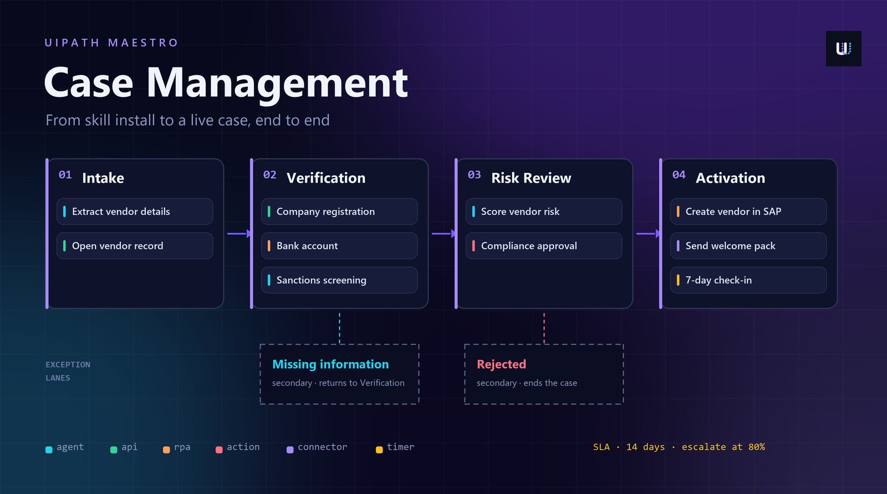
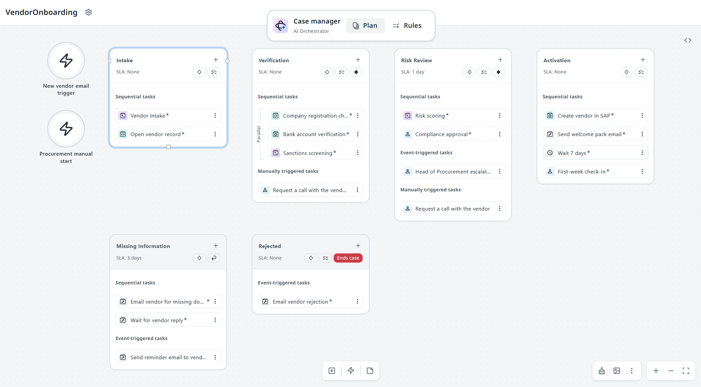
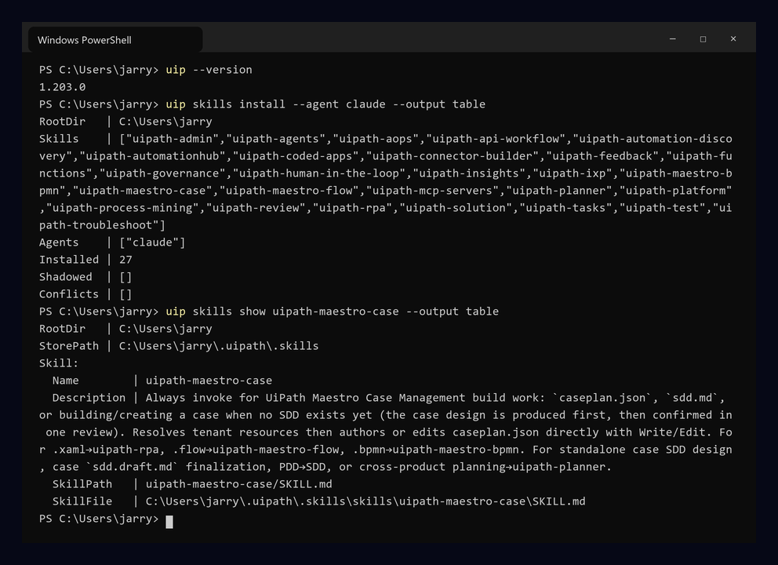
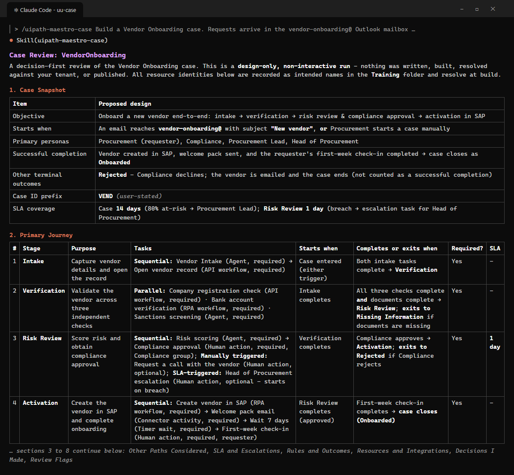
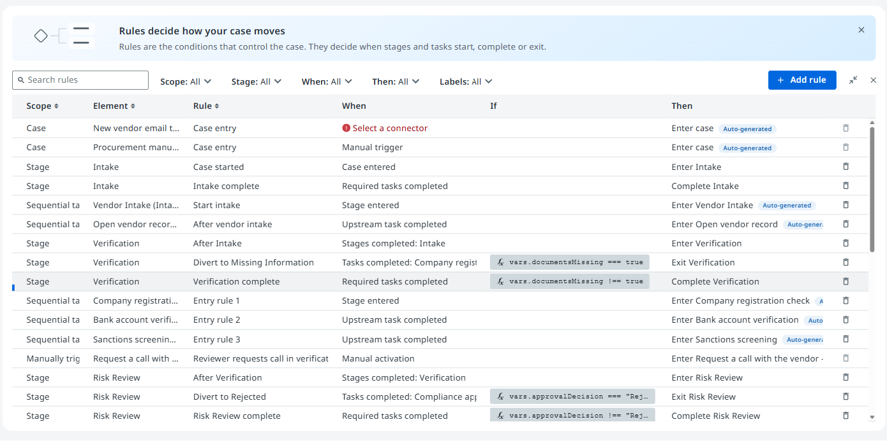

Maestro Case Management: from blank folder to a live case
Some work will not fit in a straight line. It waits, loops back, needs a human decision and runs against a deadline. This is a complete, hands-on walkthrough of building that kind of work as a Maestro case, from installing the skill to operating live case instances.

Why a case, not a flow
Most automation is a straight line. A trigger fires, a few systems get updated, done. Maestro Flow is brilliant at that. But some work refuses to be a straight line: it waits days for a supplier, loops back when a document is missing, needs a human to sign off, and has a deadline someone will be shouted at about. That is a case.
Remember the Automation Discovery post? Vendor onboarding came out as a Tier 2 candidate with a Flow handoff. Look at it properly and it is a textbook case: it runs for days, it has a compliance gate, it has an exception path for missing paperwork and a terminal path for rejections, and the business measures it against an SLA. So that is exactly what we are going to build here, end to end, from an empty folder to a case running in Orchestrator.
-
Straight line
Maestro Flow
Event-driven integration flows. Fast to build, great when the path is known and short-lived.
- shape · trigger → steps → done
- lives for · seconds to minutes
-
Modelled
Maestro BPMN
Governed, modelled processes in BPMN notation. Use it when the path is known in advance and must be followed exactly.
- shape · gateways and lanes
- lives for · minutes to days
-
Decided as you go
Maestro Case
Knowledge work where the next step depends on what you find. Stages, rules, exception lanes, human decisions and SLAs.
- shape · stages + rules
- lives for · days to weeks
The anatomy of a case
A case definition lives in one file, caseplan.json. Everything below is a part of that file. It is worth learning the vocabulary before we build, because the skill will talk to you in exactly these words.
-
Root
The case
The container: case variables, the case ID format (we will use a
VENDprefix), the whole-case SLA, and the case exit rules that decide when it is done. -
Containers
Stages
The phases of the work. Primary stages are the happy path. Secondary stages are interrupting exception lanes, such as rework or rejection, that pull the case off the main path.
-
Work
Tasks
What actually happens inside a stage. A task calls an agent, a robot, an API workflow, a person or a connector - each one is a different task type.
-
Movement
Rules
Conditions that start tasks, move the case between stages, and close it. There are no arrows in a case: rules are the arrows.
-
Time
SLAs & escalations
Deadlines on the whole case or on one stage, with at-risk and breach thresholds that notify someone or start work.
-
Start
Triggers
How a case begins: manually, on a timer, or when an external event arrives through Integration Service, such as an email.
Tasks come in nine types. You will rarely use all of them in one case, but our vendor onboarding case uses seven:
-
Calls a UiPath agent. Ideal for judgement work on unstructured input: reading a vendor email, screening names against sanctions lists, producing a risk score with reasons.
-
Runs an unattended robot. Still the right tool for systems with no API: the legacy bank verification portal and creating the vendor master record in SAP.
-
A fast, headless API call. We use one to open the vendor record and one to check company registration with the registrar.
-
Assigns a task to a person or group through an action app. Compliance approval, the escalation for the Head of Procurement, and the first-week check-in are all actions.
-
Calls an Integration Service connector directly, with no robot or workflow in between. We use the Outlook connector to email the vendor.
-
Pauses until an external event arrives - here, the vendor replying with their missing documents. The case simply waits; no robot sits idle.
-
Pauses for a set time. After activation we wait seven days, then ask the requester whether the vendor is actually working out.
-
A
processtask starts another orchestration process; acase-managementtask starts a whole child case. Useful when one case spawns another, such as a contract case per approved vendor.
Rules: how a case actually moves
This is the part that trips people up. A case has no edges. Nothing is wired with arrows. Instead, every stage and every task carries rules that say when it starts, and the case has rules that say when it ends. There are four places a rule can live:
-
Sequential (
runs-sequentially): tasks run top to bottom in order. Parallel (current-stage-entered): start as soon as the stage starts. After specific tasks (selected-tasks-completed): a fan-in. Event-triggered (wait-for-connector). Ad hoc: only when a user starts it from the Case App. SLA response (sla-status-change): starts when an SLA goes at risk or breaches. -
The first stage enters on
case-entered. Every other primary stage enters when a predecessor completes (selected-stage-completed) or exits (selected-stage-exited). Secondary stages are entered by interrupting rules - an exception signal, an external event, or an SLA status change. -
Three exit styles:
exit-only(the default - the next stage is whichever one's entry rule matches),wait-for-user(someone decides), andreturn-to-origin(go back where you came from - perfect for rework loops). A completing exit usually fires when all required tasks are done. -
The preferred pattern is a single rule: complete when every required stage has completed (
required-stages-completed). You can add non-completing exits too - our Rejected lane ends the case without marking it complete.
Try it: five requirements from the vendor onboarding case. Pick the rule you would use for each.
Q1Run the registration, bank and sanctions checks at the same time.
current-stage-entered. Every task with this rule starts the moment the stage starts, so all three checks run in parallel.
Q2Score the vendor's risk, then send it to Compliance.
runs-sequentially. “Then” means order. Sequential tasks run top to bottom in the stage, one after the other.
Q3Let a reviewer request a call with the vendor, only if they need one.
adhoc. The task only runs when a person starts it from the Case App, and it is optional, so it never blocks the stage.
Q4Start an escalation task when Risk Review runs past its 1-day SLA.
sla-status-change. The task waits for the stage SLA to breach. This is the “start a task” SLA response.
Q5Close the case once Intake, Verification, Risk Review and Activation are done.
required-stages-completed, as a case exit rule that marks the case complete. It waits for every stage flagged as required, so the optional exception lanes never hold it up.
Pick an answer for each one.
The use case: vendor onboarding
Here is the case we are building. A distributor onboards new suppliers every week. Requests arrive by email to a shared Procurement mailbox, and today they are tracked in a spreadsheet and a lot of chasing. The goal: one case per vendor, from first email to the first-week check-in, with every decision recorded.
Below is the shape your finished case should have: four primary stages on the happy path, and two exception lanes underneath that only open when something goes wrong. Click any task to see what it calls, when it starts and what it reads and writes. Then press a scenario to watch a case run through it, with the SLA clock and the case history ticking along like they do in the Case App.
Primary stages · the happy path
Secondary stages · exception lanes
Task details
Click any task above to see what it does.
Case history
That is a diagram, built so you can click around it. Here is the real thing: the case exactly as the skill built it on my dev tenant, open in the Studio Web designer.

The build kept the shared case variables to just four: vendorName and vendorEmail from the trigger, documentsMissing, which drives the divert to Missing Information, and approvalDecision, which drives the divert to Rejected. Everything else passes straight from one task to the next. The whole case has a 14-day SLA (it has to cover the 7-day wait before the check-in), and Risk Review has its own 1-day SLA.
Meet the skill: uipath-maestro-case
uipath-maestro-case is a UiPath skill: a pack of instructions your coding agent (Claude Code, Cursor, Codex, Copilot and others) reads so it knows how to design, build, validate and ship a case through the uip CLI. You describe the case in plain language. The agent does the rest - and stops to ask you before anything touches a live system.
It works in a fixed sequence. Here is what each phase does, straight from the skill:
-
P0
Design
From your description it makes the design calls, checks your tenant for the agents, robots and apps you mentioned, and shows you one review packet. Your answer is the go-ahead. The approved design is saved as
sdd.md. -
P1
Resolution
Logs in, refreshes the local resource cache (
uip maestro case registry pull) and binds every task to a real tenant resource - or marks it as a placeholder if it does not exist yet. -
P2
Prototyping
Creates the solution and writes the case structure: triggers, variables, stages, tasks, rules and SLAs. Optionally pauses here so you can preview the flow in Studio Web.
-
P3
Implementation
Wires every task's inputs and outputs, fetches connector schemas, and fills in the connector-driven rules.
-
P4
Validate
Runs
uip maestro case validate --strict --sdd sdd.md, which checks the case against the approved design, element by element. Fixes and retries up to three times. -
P5
Publish
Asks you whether to upload to Studio Web, and gives you the designer link.
-
P6
Debug
Asks you whether to run the case for real. A debug run sends real emails and calls real APIs.
-
P7
Publish to Orchestrator
Asks you whether to pack and publish the solution to your tenant feed.
Hands-on: from zero to a live case
Enough theory. This is the full path on a clean machine. Budget about an hour the first time, most of it reading what the agent shows you.
-
Install the UiPath CLI
~5 minuipis the UiPath command-line interface. The installer checks for Node.js, installs@uipath/cliplus the runtimes it needs, and is safe to re-run.Terminal - macOS / LinuxPowerShell - Windows# one-liner: CLI + runtimescurl -fsSL https://download.uipath.com/uipath-cli/install.sh | bashirm https://download.uipath.com/uipath-cli/install.ps1 | iex# already have Node? CLI onlynpm -g install @uipath/cli# verifyuip --versionCheckuip --versionprints a version number. Mine is 1.203 while writing this; anything from 1.202 up has the strict validation this walkthrough relies on. -
Install the skills into your coding agent
~2 minuip skills installinstalls the whole UiPath skills catalog for your agent. Install the full catalog rather than one skill: the case skill hands the design conversation touipath-planner, and can build missing agents or API workflows withuipath-agentsanduipath-api-workflow.Terminal# auto-detects your agent, or target oneuip skills install --agent claude# what does the case skill do?uip skills show uipath-maestro-case# not sure which skill you need?uip skills search "case management"Claude CodeFor Claude Code the skills arrive as a plugin. Restart the agent after installing so it picks them up, then type
/uipath-maestro-caseto call the skill directly.
My actual install: 27 skills for Claude Code, including uipath-maestro-case. -
Authenticate to your tenant
~2 minEverything from here touches your tenant, so log in. The browser opens; pick the organisation and tenant you want the case to live in.
Terminaluip login# browser opens → choose organisation + tenantuip login status --output jsonuip login tenant listuip login tenant set <tenant-name>SecurityUse a non-production tenant for your first case. A debug run in step 09 sends real emails.
-
Get the building blocks ready
~10 minA case orchestrates things that already exist: agents, robots, API workflows, action apps and connections. The skill looks them up in a local cache of your tenant, so refresh it and see what it finds.
Here is the honest bit: I ran this on the Training folder of my dev tenant, which has none of these yet. No Vendor Intake or Risk Scoring agent, no Bank Portal or SAP robot, no approval app. That is fine, and it is how most people will start. The design does not need them, and at build time anything missing becomes a placeholder.
Terminal# refresh the local resource cache (lasts 24 hours)uip maestro case registry pull# what can the case use?uip maestro case registry search "Vendor" --output jsonuip maestro case registry search "Risk" --type agent --output jsonBeginner tipYou do not need everything built first. Anything the skill cannot find becomes a placeholder task. The case still builds and validates; you bind the real resource later.
-
Describe the case
~5 minNow the interesting part. Open your agent in an empty folder and describe the case like you would to a colleague. Name the stages, the people, the systems and the deadlines. The more you name, the fewer questions come back.
Claude Code - prompt/uipath-maestro-caseBuild a Vendor Onboarding case. Requests arrive in thevendor-onboarding@ Outlook mailbox with subject "New vendor";Procurement can also start one manually. Case IDs start VEND.Intake: Vendor Intake agent extracts details, then theVendor Record API workflow opens the record.Verification, in parallel: company registration (API workflow),bank account (Bank Portal robot), sanctions screening (agent).Missing documents divert to a Missing Information lane thatemails the vendor, waits for the reply, returns to Verification.Risk Review: Risk Scoring agent, then Compliance approves inthe Vendor Approval app (Compliance group). Rejections go to aRejected lane that emails the vendor and ends the case.Reviewers can start an ad hoc "Request a call with the vendor".Activation: SAP Vendor robot, welcome pack email, wait 7 days,then a first-week check-in for the requester.SLA: case 14 days, notify the Procurement Lead at 80%. RiskReview 1 day; on breach, start an escalation task for theHead of Procurement.Why so specificWords like “then”, “after” and “in parallel” become task rules. “Ends the case” and “returns to” become exit styles. Ambiguity is fine - the skill makes a call and shows it to you - but specific words save a review round.
-
Review the design packet
~10 minBefore it builds anything, the skill shows you one review packet with eight sections (the next section of this post walks through each one). Read it properly. This is the cheapest moment to change your mind.
Reply with corrections in plain language, and it re-shows only the sections that changed. When it looks right, choose a build option: straight through, or pause at a mid-build preview.
Claude Code - promptTwo changes: remind the vendor after 3 days on the MissingInformation wait, and let reviewers request a call duringVerification too. Then build it, and pause at the build preview.
My real review packet (first two of eight sections), from a design-only run on my dev tenant. The two changes above answer items from its own Review Flags. -
Watch it build
~10 minFrom here it runs on its own until the next decision. You will see it log in, resolve every resource, create the solution, write the case, wire inputs and outputs, and validate. The progress looks roughly like this (an outline of the phases, not a copy of my log):
Build progress (outline)● Login tenant: <your dev tenant>● Registry pulled · resources cached for 24h● Resolved anything that exists in the folder● Placeholder every resource it cannot find, e.g.Company Registration Check (api-workflow)● Solution uip solution init VendorOnboarding● Prototype 6 stages · 16 tasks · rules · 2 SLAs● Preview validate --skeleton-v2 → Valid● Implement inputs/outputs bound · Outlook schemas fetched✓ Validate validate --strict --sdd sdd.md → Valid (strict)Placeholder?If the Company Registration Check does not exist, the task is kept as a placeholder with its name, stage and rules intact. It is listed in
build-issues.md. Build the API workflow later, refresh, and bind it. -
Preview it in Studio Web
~3 minBecause I asked it to pause at the preview, the skill asks whether to upload. Yes. It refreshes the solution's resources and uploads, then prints a link straight into the Studio Web designer. Mine came back
Imported, strict validation clean, with 17 placeholder tasks for the resources my Training folder does not have yet.What the agent runsuip solution resources refresh --solution-folder ./VendorOnboarding --output jsonuip solution upload ./VendorOnboarding --output json{ "Status": "Success", "Action": "Imported", "DesignerUrl": "https://cloud.uipath.com/…" }Imported vs OverwrittenImportedmeans a new solution in Studio Web.Overwrittenmeans it replaced what was there - including any edits someone made in the browser. Say no if a colleague has been editing it.
Switch the designer to Rules and every rule the skill wrote is in one table. Note the two diverts with exactly opposite conditions, and the red Select a connector on the email trigger: a placeholder waiting for an Outlook connection. -
Debug it - for real
~10 minNext it asks whether to run a debug session. A debug run is not a simulation: it uploads the case and runs it, so the Outlook connector really sends email and robots really start. Use a test mailbox and a test vendor.
What the agent runsuip solution resources refresh --solution-folder ./VendorOnboarding --output jsonuip maestro case debug ./VendorOnboarding/VendorOnboarding --log-level debug --output jsonTest dataSend yourself a “New vendor” email from a test address with a dummy company. Leave out the bank letter to watch the Missing Information lane kick in.
-
Publish and deploy to Orchestrator
~5 minLast gate: publish to Orchestrator? On yes, the skill runs four commands in order. The case pack step is not optional - it compiles
caseplan.jsoninto the.bpmnfile the runtime actually executes.Publishing puts the package on your tenant feed. Deploying it into a folder is one more command, which you run yourself.
What the agent runsuip solution resources refresh --solution-folder ./VendorOnboarding --output jsonuip maestro case pack ./VendorOnboarding/VendorOnboarding ./VendorOnboarding/dist --output jsonuip solution pack ./VendorOnboarding ./VendorOnboarding/dist --output jsonuip solution publish ./VendorOnboarding/dist/VendorOnboarding_1.0.0.zip --wait --output jsonThen you deployuip solution deploy run --package-name VendorOnboarding --package-version 1.0.0 --folder-name "Vendor Onboarding" --parent-folder-path Shared --waituip solution deploy listVersion bumpsThe feed rejects a name and version it already has. On your second publish, pack with
--version 1.0.1. -
Run and operate it
ongoingThe case is live. New emails start cases on their own, but you can start one by hand and follow it from the CLI. Every case instance can be inspected, paused, resumed, retried or cancelled.
Start one and follow ituip maestro case process list --folder-key <folder-guid>uip maestro case process run <process-key> <folder-guid> --inputs @vendor.json --validateuip maestro case job traces <job-key> --prettyOperate instancesuip maestro case instance list --process-key <process-key> --folder-key <folder-guid>uip maestro case instance variables <instance-id>uip maestro case instance pause <instance-id> --comment "Waiting on legal"uip maestro case instance resume <instance-id>uip maestro case instance incidents <instance-id>
The review packet, section by section
Step 06 is where you earn your money, so here is what each of the eight sections showed me for this case, and what to look for.
-
A short table: objective, how it starts (a “New vendor” email or manual), who is involved, what counts as success (Onboarded) and the other ending (Rejected), VEND prefix, SLAs. Check the trigger first - a wrong trigger means no cases at all.
-
Every stage and task in order, with its type and whether it runs sequentially or in parallel. Mine showed Verification's three checks in parallel and everything else sequential - exactly what I asked for.
-
Every exception with how it is modelled and why. Mine listed my four (missing documents, rejection, the ad hoc call, the late Risk Review) and two I never mentioned: a robot or connector failing, and a vendor withdrawing. Both marked “not modelled” - deliberately visible rather than silently ignored.
-
Mine had four rows, two of which I never asked for: a case breach that notifies the Head of Procurement, and a Risk Review at-risk alert to Compliance at 75%. Each row says whether it was user-stated or an inferred default. Check that every recipient is a real person or group.
-
Which rule moves the case into each stage, which exits return or end, and what counts as a completed case. Rejected ends the case without marking it complete - confirm that matches how you report.
-
Each task next to the resource it intends to call: agent, API workflow, robot, action app or Outlook connector, all in the Training folder. Anything that does not exist when you build becomes a placeholder.
-
The most important section. Seventeen rows for me, each tagged user-stated or inferred. The inferred ones are what to read: “waits for the reply” became a wait-for-callback, and the ad hoc call was placed in Risk Review only.
-
Things it wants you to look at, each with the default if you say nothing. Mine: the Missing Information wait has no timeout, there is no failure lane for the robots and connectors, and the ad hoc call only exists in Risk Review. Two of those became my step 06 reply.
What the build writes
When the build finishes, this is your workspace. The case is a normal UiPath solution, so it versions in Git, deploys like anything else, and opens in Studio Web.
Two files deserve a closer look. sdd.md is the approved design, and it stays the source of truth: the final validation checks caseplan.json against it and names anything missing. Keep it in Git next to the solution. build-issues.md is your to-do list - placeholders to bind, recipients to confirm, anything the skill could not finish on its own.
One quiet detail I liked: parallel tasks pass their outputs directly to the next task instead of through shared case variables. That avoids two tasks in Verification overwriting each other's result when they finish at the same moment.
SLAs and escalations in practice
An SLA has a duration (minutes, hours, days, weeks or months), an at-risk threshold, and a breach. What makes case SLAs powerful is that each one can do more than send an email. There are five possible responses:
-
The default. At 80% of the case's 14 days (day 11.2), the Procurement Lead gets a heads-up. Nothing in the case changes.
-
When Risk Review breaches its 1-day SLA, an escalation action starts for the Head of Procurement. The original approval keeps running - the escalation is extra work, not a replacement.
-
Moves the case into a secondary stage, for example an “Expedite” lane with its own tasks. Use it when a breach changes how the work is done, not just who knows about it.
-
Leaves the current stage on breach. Useful for time-boxed stages where “no answer” is itself an answer.
-
Ends the case. I use it on the Missing Information lane: if the vendor has not replied in 10 days, the case closes and Procurement can reopen it when the vendor comes back.
Try it: drag the sliders to move time forward and watch what fires. The amber line is the at-risk threshold, the pink line is the breach.
On track. Nothing fires.
On track. Nothing fires.
You can also make an SLA conditional. For example: if riskBand is High, Risk Review gets 4 hours instead of a day. Conditional rules are checked in order, and the plain duration is the fallback.
Day two: changing a live case
Requirements change the week after go-live. They always do. The skill handles targeted edits to an existing case, and the important habit is to start from the latest version, because someone may have edited it in Studio Web.
-
Pull the latest version
~1 minIf anyone has touched the case in Studio Web, get their changes first, or your upload will overwrite them.
Terminaluip solution download -
Ask for the change
~5 minDescribe the change in plain language. The skill edits just that part of
caseplan.json, keeps every existing ID, and validates.Claude Code - prompt/uipath-maestro-caseIn Verification, add a B-BBEE certificate check as a fourthparallel task using the BBBEE Check agent. It is required. -
Ship it and move running cases
~5 minPublish as before with a bumped version. Cases already in flight stay on the version they started on; move them across when you are ready.
Terminaluip maestro case instance migrate <instance-id> 1.0.1CarefulMigrating a case that is mid-stage can skip or repeat work. Test it on one instance before you migrate a batch.
Where it breaks
The skill is genuinely good, but here are the sharp edges I hit or nearly hit. Every one of them is in the skill's own rules, which tells you how often people have met them.
-
Hangs
A task with no entry rule
Validation only warns, and the debug run waits forever. If you hand-edit the case, give every task a rule.
-
Real emails
Debug is not a dry run
It sends real mail and starts real robots. Use test mailboxes, test vendors and a non-production tenant.
-
Silent
Groups without folder access
An action assigned to a group that has no role on the folder is created and reaches nobody. The case cannot grant that access; your admin must.
-
Stale
Skipping case pack
Pack and publish both succeed without it, but ship an old or missing
.bpmn. Always runcase packfirst. -
Placeholders
Builds that look finished
A placeholder task passes validation but does nothing at runtime. Read
build-issues.mdbefore you go live. -
Overwrites
Uploading over browser edits
An upload replaces what is in Studio Web. Download first if anyone else works on the case.
What's next
Maestro Case Management gets its own episode later in Season 1, in the Run & Scale pillar. If you build a case off the back of this post, I would love to hear what it does - and where it broke. Find me on LinkedIn, and subscribe to the show so you catch the episode when it lands.